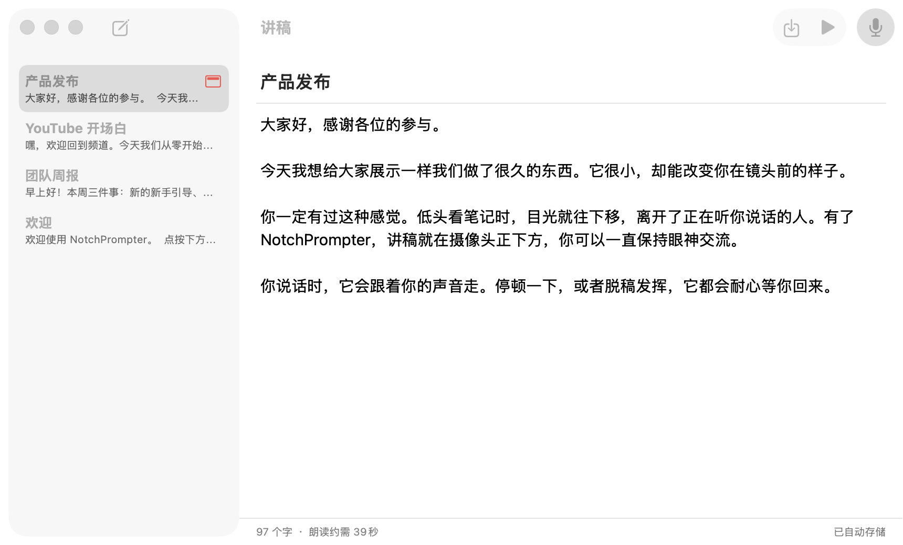
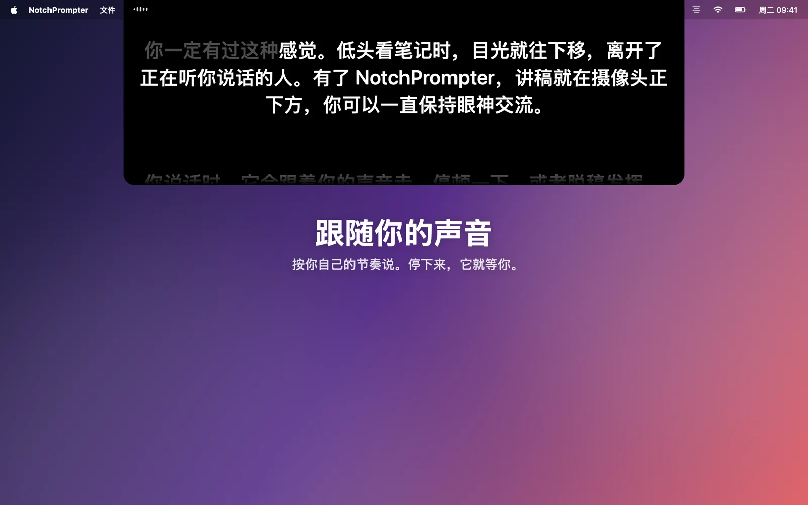
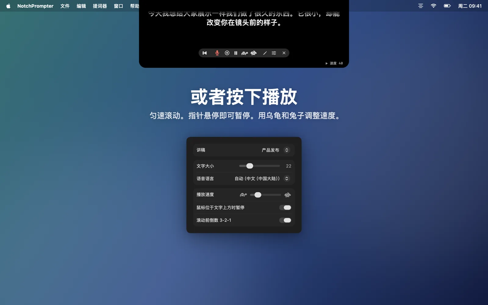
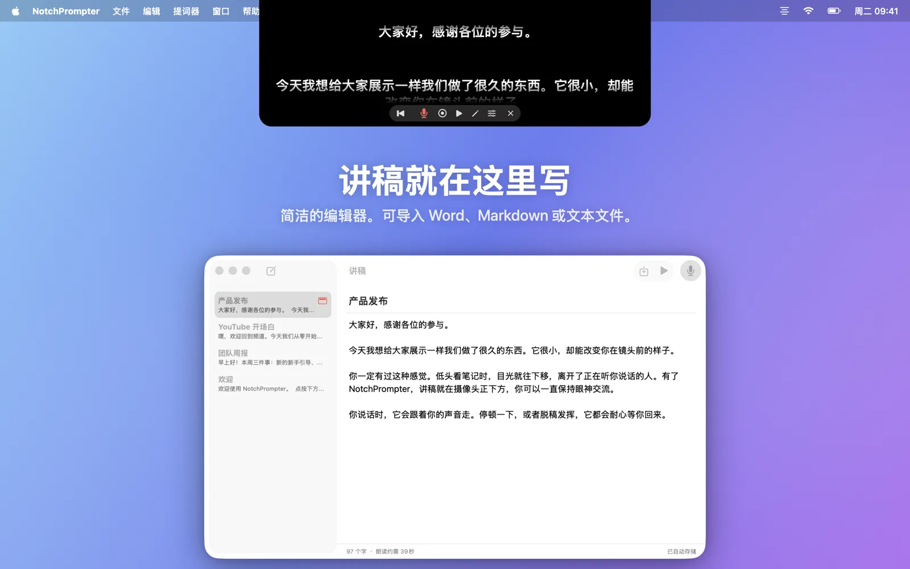
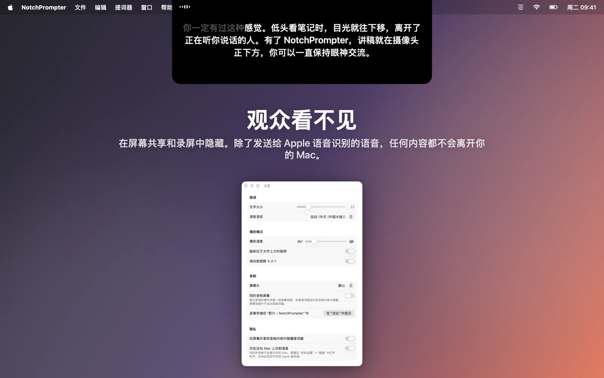

边读稿，边保持眼神交流
NotchPrompter 把讲稿放在摄像头正下方，并跟随你的声音。任何语言都行，跳读也没问题，而且完全在 Mac 上运行。
免费且开源。适用于 macOS 15 Sequoia 或更高版本。在带刘海的 MacBook 上效果最佳，顶部带摄像头的任何 Mac 也都能用。
看看实际效果
朗读、停顿、跳读，提词器都跟得上你。
该有的都有，碍事的全无。
摄像头下方的一块黑色小面板、几个清晰的按钮、一个用来写讲稿的小编辑器，还有一个录制按钮。
跟随你的声音
按下麦克风，开口说话。接下来的文字始终在摄像头正下方，说过的文字会逐渐淡出。
任何语言，自动识别
NotchPrompter 会识别讲稿所用的语言，并用这种语言来听。支持英语、挪威语、德语、西班牙语、日语等数十种语言。
跳读也能跟上
跳过一句、换个词、说声“呃”都没关系。它会找到你读到了哪里，和你一起往前跳。你停下来，它就等着。
或者按下播放
3-2-1 倒计时后平滑滚动。指针悬停即可暂停，用乌龟和兔子按钮调整速度。
内置编辑器
在一个地方撰写并保存所有讲稿。可导入 Word、Markdown、RTF 或文本文件。自动保存。
录制自己
按下录制，即可在朗读时用摄像头和麦克风拍摄自己。每一条都会以影片形式存储在“影片”文件夹中。
观众看不见
在屏幕共享、截屏和录屏中都会隐藏。只有你自己看得到。
完全在 Mac 上运行
语音在你的 Mac 上识别，而不是在云端。无需账户，没有跟踪。你的讲稿和录制内容绝不会离开你的 Mac。
讲稿，一键即达
点按提词器中的铅笔即可打开编辑器。选择一份讲稿，按下麦克风，开始说话。
- 撰写或粘贴讲稿，或导入文件。
- 按下语音跟读。
- 看着摄像头说话。

为镜头而生
视频通话、YouTube、课程、网络研讨会和路演。




常见问题
真的免费吗？
是的。NotchPrompter 免费且开源，采用 MIT 许可证。没有广告，没有订阅，无需账户。源代码托管在 GitHub 上，你可以在那里报告错误、建议功能或参与开发。
没有刘海也能用吗？
能。在没有刘海的 Mac 上，提词器会悬挂在屏幕顶部、菜单栏下方，依然离摄像头很近。
语音跟随支持哪些语言？
数十种，包括英语、挪威语、德语、法语、西班牙语、中文和日语。NotchPrompter 会识别讲稿所用的语言并用它来听，所以你无需进行任何设置。你也可以在设置中选择其他语言。
共享屏幕时，别人会看到提词器吗？
不会。默认情况下，它在屏幕共享、截屏和录屏中都是隐藏的。如果想显示它，可以在设置中关闭此选项。
会有内容上传到云端吗？
不会。语音在你的 Mac 上识别（需在系统设置中打开听写），NotchPrompter 也没有服务器。语音跟随绝不保存音频。只有在你按下录制时才会存储影片，而且存储在你自己的“影片”文件夹中。请阅读隐私政策。
有哪些键盘快捷键？
先点按提词器，然后：空格键 播放/暂停，V 语音，C 录制，R 回到顶部，↑ ↓ 速度，+ − 文字大小，E 编辑器，Esc 停止。